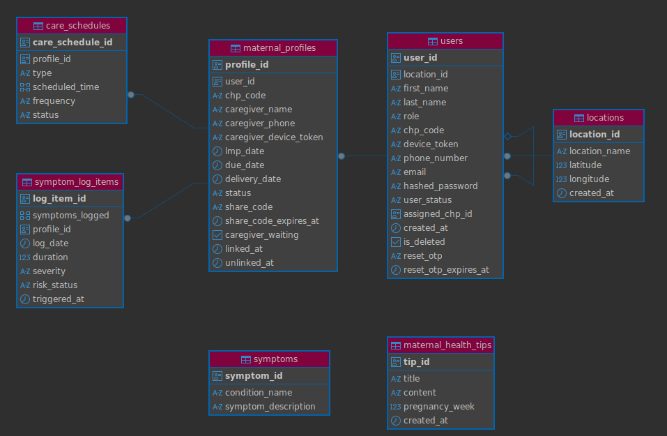

Database
1. Overview
Bloom uses PostgreSQL as its primary database.
The database stores the information required by the mobile application, administrative dashboard and backend services.
Client applications do not connect directly to PostgreSQL. Database access is handled by the Bloom backend.
Bloom Mobile Application
|
| API requests
|
Bloom Backend
|
| Database operations
|
PostgreSQL
The administrative dashboard follows the same approach:
Administrative Dashboard
|
| API requests
|
Bloom Backend
|
| Database operations
|
PostgreSQL
2. Entity Relationship Diagram
The following ERD shows the main database entities and their relationships.

3. Database Access
The backend is responsible for communication with PostgreSQL.
The database-related functionality is located in the backend, with database.py providing the database functionality used by the application.
The backend uses the database models and application services to work with stored information.
The general flow is:
API Request
|
|
Router
|
|
Service
|
|
Database
|
|
PostgreSQL
This keeps database access within the backend rather than exposing the database directly to client applications.
4. SQL Operations
PostgreSQL is used to store and retrieve Bloom application data. The backend can perform common SQL operations such as SELECT, INSERT INTO, UPDATE, and DELETE.
SELECT
The SELECT statement is used to retrieve data from a table.
SELECT *
FROM users;
To retrieve specific columns:
SELECT id, email, role
FROM users;
WHERE
The WHERE clause is used to filter records.
SELECT *
FROM users
WHERE role = 'mother';
Another example using a maternal profile:
SELECT *
FROM maternal_profiles
WHERE user_id = 1;
INSERT INTO
The INSERT INTO statement is used to add a new record.
INSERT INTO users (email, role)
VALUES ('mother@example.com', 'mother');
UPDATE
The UPDATE statement is used to modify existing records.
UPDATE users
SET role = 'caregiver'
WHERE id = 1;
DELETE
The DELETE statement is used to remove a record.
DELETE FROM users
WHERE id = 1;
ORDER BY
ORDER BY is used to sort query results.
SELECT *
FROM symptom_log_items
ORDER BY created_at DESC;
LIMIT
LIMIT restricts the number of records returned.
SELECT *
FROM maternal_profiles
LIMIT 10;
COUNT
COUNT can be used to calculate the number of records.
SELECT COUNT(*) AS total_users
FROM users;
JOIN
JOIN can be used to retrieve related information from multiple tables.
SELECT users.email, maternal_profiles.id
FROM users
JOIN maternal_profiles
ON users.id = maternal_profiles.user_id;
These SQL operations are handled by the backend database layer rather than being executed directly by the mobile application or administrative dashboard.
5. Main Data Areas
The Bloom backend contains models for the main types of information used by the platform.
Database
|
|-- Users
|-- Locations
|-- Maternal Profiles
|-- Symptoms
|-- Symptom Log Items
|-- Care Schedules
\-- Maternal Health Tips
These areas correspond to the database models in the backend.
6. User Data
User information is represented by the user.py model.
User data is used by the platform to support the different user roles and their associated functionality.
User-related operations are exposed through the user router and handled through the user service.
User Request
|
|
user.py
|
|
user_service.py
|
|
Database
7. Location Data
Location information is represented by the location.py model.
Location functionality is used by the platform where location information is required.
The backend also contains distance.py, which provides distance calculation functionality.
Location-related requests are handled through the location router and location service.
Location Request
|
|
location.py
|
|
location_service.py
|
|
Database
8. Maternal Profile Data
Maternal profile information is represented by the maternal_profile.py model.
The maternal profile stores information associated with a mother's profile within the Bloom platform.
Maternal profile operations are handled through the maternal profile router and service.
Maternal Profile Request
|
|
maternal_profile.py
|
|
maternal_profile_service.py
|
|
Database
9. Symptom Data
Bloom separates symptom information from individual symptom log entries.
The symptom.py model represents symptom information, while symptom_log_item.py represents individual entries recorded in a symptom log.
The corresponding routers and services handle these two areas.
Symptom Information
|
|
symptom.py
|
|
symptom_service.py
Individual symptom log entries follow:
Symptom Log Entry
|
|
symptom_log_item.py
|
|
symptom_log_item_service.py
The resulting data is stored through the backend's database layer.
10. Care Schedule Data
Care schedule information is represented by the care_schedule.py model.
Care schedule operations are handled through the care schedule router and service.
Care Schedule Request
|
|
care_schedule.py
|
|
care_schedule_service.py
|
|
Database
This allows care schedule information to be managed through the Bloom API.
11. Maternal Health Tips
Maternal health tip information is represented by the maternal_tip.py model.
The corresponding router and service provide the API and application logic for maternal health tips.
Maternal Tip Request
|
|
maternal_tip.py
|
|
maternal_tip_service.py
|
|
Database
12. Analytics Data
Analytics functionality is handled by the backend through:
routers/
|
\-- analytics.py
and:
services/
|
\-- analytics_service.py
Analytics-related information is processed through the backend rather than being retrieved directly by the dashboard from PostgreSQL.
The administrative dashboard communicates with the backend API when accessing analytics functionality.
13. Database Models
The database models currently documented in the backend are:
models/
|
|-- user.py
|-- location.py
|-- maternal_profile.py
|-- symptom.py
|-- symptom_log_item.py
|-- care_schedule.py
\-- maternal_tip.py
Each model represents a particular area of information used by Bloom.
The models are part of the backend's data layer and are used when working with information stored in PostgreSQL.
14. Data Access Flow
Bloom uses the backend as the central point for database access.
For mobile users:
Mother / Caregiver / CHP
|
|
Mobile App
|
|
Bloom API
|
|
Backend
|
|
PostgreSQL
For administrators:
Administrator
|
|
Admin Dashboard
|
|
Bloom API
|
|
Backend
|
|
PostgreSQL
This means that database operations are handled by the backend regardless of which client application initiated the request.
15. Database Configuration
Database configuration is handled by the backend.
The backend's database.py file contains the database functionality, while configuration values required by the application are provided through the project's environment configuration.
The backend environment should be configured using the variables provided in .env.example.
Sensitive database credentials should not be committed to the repository.
16. Database and API Separation
The PostgreSQL database is not exposed directly to the mobile application or administrative dashboard.
Instead, requests pass through the backend API.
Mobile Application
|
|
Administrative Dashboard
|
|
Bloom API
|
|
Backend
|
|
PostgreSQL
This keeps database operations within the backend and provides a single point through which application data is accessed and managed.